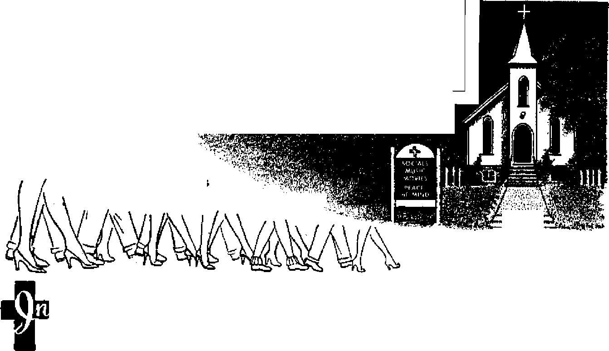
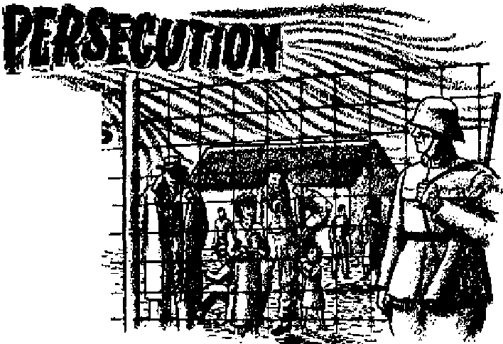
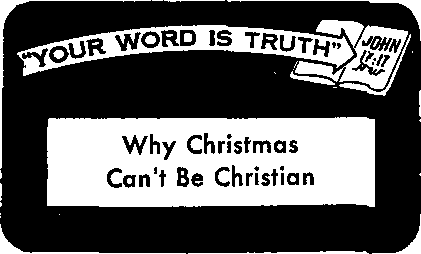

DECEMBER 22, 1956 semimonthly
THE MISSION OF THIS JOURNAL
New* source* that at* able to keep you awake to the vital issues of our times must be unfettered by censorship and selfish interests. “Awake!" ha* no fetters. It recognizes facts, faces facts, is free to publish facts. It is not bound by political ambitions or obligation*; it Is unhampered by advertisers whose toes must not be trodden oti; it is unprejudiced by traditional creeds. This journal keeps itself free that it may speak freely to you. But it does not abuse its freedom. It maintains integrity to truth.
“Awake J” use* the regular news channels, but is not dependent on them. Its own correspondents are on all continents, in scores of nations. Trom the four corners of the earth their uncensored, on-the-scenes reports come to you through these columns. This journal’s viewpoint is not narrow, but is international It is read in many nations, in many languages, by persons of all ages. Through its pages many fields of knowledge pass in review—government, commerce, religion, history, geography, science, social conditions, natural wonders—why, its cover' age is as broad as the earth and as high os the heavens,
"Awake I" pledge* itself to righteous principles, to exposing hidden fees and subtle dangers, to championing freedom for ail, to comforting mourners and strengthening those disheartened by the failures of a delinquent world, reflecting sure hope for the establishment of a right* sous New World.
Get acquainted with “Awake!” Keep awake by reading “Awake!”
Published Semimonthly By
WATCHTOWER BIBLE AND TRACT SOCIETY OF NEW YORK, INC.
127 Adams Street, Brooklyn L New York, U. S. A. N. H-Knorb, President Grant Suiter, Secretary
Printing this issue: 2,000,000
Gtbw is whick “A*ak»!” It pibllshtd:
Semimonthly—Afrikaans, Finnish, French, German, tfrvek, BdbDdiab, Italian, Morwegian, Spiitfeh, Swedish.
/tpacesa, I/kraMfan.
Yearly subscription rxtt* Otm for temimtfflthlp editions
Amrita, U.S-, 117 Mama st., fimdfka 1, A.Y fJ Aoftnlla, 11 Bewfwd Bd., Btrrthfield, N.8.W. */-Cutfa, 150 Bridgeland Ave., Toronto 10, Ont. |1 EM land, 34 CrtTen Terrace, London W. 2 7/'
Zetlasd, G.P.O. Box 30. WelHaCtcn, Cl V'
Sorth Afrfta, Private Jajf, ZZtoWbatefr, TrJ. ?/-
NatlM/ wt teif IM rtrnv r*f».
Five cents a copy
Remittanw should be cent to office in your country 1q compliance with regulations to guarantee safe delivery of fliODey. RemhtAncea are accented at Brooklyn from ccuntrin where no office fg located, by iDtemaiiotia] money order only. BubserlptloQ rates in different countries are hero stated in local currency Met lot at exglratlM (with renewal blank) fc «wnt at lawt tw Isiues before aiibwilptinn ex. n/roff. ChtiTfff of sMrm eent io ottr office may be expected effective within one month. Seud your old as well u new address.
Sterad as neond-cUse matter at Brooklyn, KY.
Printed in U.S. A.
CONTENTS
My Ordeal During the Hong Kong Riots 9
Political Housecleaning in 'Trinidad
Jehovah’s Witnesses in the News
Jewish Persecution in Modern Times
Facts and Fallacies About Fuels
“Your Word Is Truth"
Why Christinas Can't Be Christian
Ancient Words Achieve Modem Fame
Index to Volume XXXVII of Awake!
THE unleashing of atomic energy may prove to be of unlimited benefit to man. But some people fear it can also mean man’s end. They say that in an atomic war so much radioactivity would be released into the atmosphere that life itself might disappear.
Leaders of each of the three nations that have atomic weapons have said that atomic war could bring destruction to all. Yet they continue to prepare for that war.
U.S. President Eisenhower said that now “war does not present the possibility of victory or defeat. War would present to us only the alternative In degrees of destruction. There could be no truly successful outcome.”
Fonner Russian Premier Georgi Malenkov said war with modem arms would mean the "destruction of world civilization.” And in Britain Sir Winston Churchill told the House of Commons that “an undue number” of bomb tests might contaminate the atmosphere for 5,000 years. On the danger of atomic weapons both East and West are agreed.
Dr. Edgar Adrian, president of the British Association for the Advancement of Science, said that no human life would survive the radioactivity of more than a few thousand atomic weapons, whether they hit their targets or not And, while world rulers are not likely to bring on their own end deliberately, he fears that the urge to end a war quickly, regardless of the risk, might bring an end to the entire human race!
U.S. Civil Defense Administrator Vai Peterson expressed the opinion that war is inevitable, despite the danger. He said: “The weight of human nature and human experience runs contrary to the hope of a peaceful settlement.”
British scientist and philosopher Bertrand Russell declared in the January, 1955, Bulletin of the Atomic Scientists: “The two sides are so evenly balanced that each, from patriotic bias, is likely to feel confident of victory. Confidence in victory is, on both sides, absurd. If war breaks out, there will be no victory but only universal defeat.” He feels that it is folly to think that international agreements would prevent the use of atomic weapons after war had begun.
Then will the end of war come only with man’s destruction of the human race itself, only when there are no more people left to fight?
No. War win end, but in a different way. The Creator made this earth to be inhabited by righteous men, and his purpose will not fail. “But the earth isn’t righteous today!” some will protest. They are right. Mankind does not meet Jehovah’s standards today. If they did there would be neither hatred nor greed, graft nor delinquency; neither thieving, stealing nor war,'nor any of the murder, immorality and corruption that you read about on the scandal pages of your daily paper. Nor would there be the confusion in religion that is so evident today.
But God said these conditions would come. They were foretold in his Word, the Bible. You can read this at 2 Timothy 3:1-5, which says: “But know this, that in the last days critical times hard to deal with will be here. For men will be lovers of themselves, lovers of money, self-assuming, haughty, blasphemers, disobedient to parents, without gratitude, with no loving-kindness, having no natural affection, not open to any agreement, slanderers, without self-control, fierce, without love of goodness, betrayers, headstrong, puffed up with self-esteem, lovers of pleasures rather than lovers of God, having a form of godly devotion but proving false to its power; and from these turn away.”—New World Trans.
No one can deny that these are the conditions upon the earth at the present time. But note that the time when these conditions would come was called “the last days.” The last days of what? The last days of Satan’s failing system. And why would things suddenly worsen in these last days? Because, as the Bible foretold regarding our time: “The Devil has come down to you, having great anger, knowing he has a short period of time,”—Revelation 12:12, New World Trans.
The cause, then, of earth’s present trouble is Satan’s special anger at knowing that his end is near. This is nothing to scoff at. A final war is at hand—a war not between the nations but between the gods. Satan will be destroyed, and Jehovah’s righteous and just rule, through his Son Christ Jesus, will prove victorious and will stand forever.
Whoever heard of such a thing? Everyone who has read the Bible has heard of it. It is foretold at Revelation 19:11-16, where you can read that Christ Jesus, the one called “Faithful and True,” the “King of kings and Lord of lords,” will judge and carry on war in righteousness, treading out the wine press of the anger of the wrath of God the Almighty.
This will mean the binding of Satan and his demons, the end of all Satan-inspired wars, the death of all persons who refuse to do right and the establishment of really righteous conditions of lasting peace. Then it can be said: “Look! the tent of God is with humankind, and he will reside with them, and they will be his peoples. And God himself will be with them. And he will wipe out every tear from their eyes, and death will be no more, neither will mourning nor outcry nor pain be any more. The former things have passed away.” This is how real peace will come.—Revelation 21:3, 4, New World Trans.
So earth’s wars will not end with an atomic destruction of all humanity. Man will not be allowed to destroy the earth or all life upon it. But we are living in the “last days” of Satan’s rule, when God soon will establish righteous conditions of permanent peace. This is the sound and sure hope that you can have by finding out what God’s Word, the Bible, really does say for our day.
BELIEVERS
MISTY
RELIGION
in this misty
lievers
reli-
an English churchyard the tombstone of a squire of former years bears the inscription: “He was not a religious man, but in all oth-
gion account for much of the increase in church attendance? Dr. Benson Y. Landis, editor of the Yearbook of American Churches, said that the figures alone cannot tell whether the nation is ac-
This year aaw another record in numbers of church members. What is this religion that causes churches to overflow and at the same time causes despair in the pulpits?
er respects he was an ideal churchman." A person viewing this tombstone might well ask: Why did this man go to church? What did he really believe? Was he more interested in feeling good than in being right? But no tombstone is needed to prompt these questions. Similar ones might well be asked of today's churchgoers. The answers are bringing little comfort to the clergy.
Despair is an emotion not often associated with the clergy. But judging from the questions being asked the clergy and the answers they give about churchgoers, there is despair in the pulpit. Bemoaned Dr. George Arthur Buttrick, pastor of the fashionable Madison Avenue Presbyterian Church of New York: “Modem man has tried the suspense of believing nothing, and because suspense is soon unbearable he has ended by believing almost anything.”
Only a vague, misty religion that can swallow up almost anything was certain to become popular. It has. Today we see a misty religion that demands little and promises much. It speaks in vague terms about Almighty God. Could it be that be-tually undergoing a spiritual awakening.
That brings to mind the words of the National Council of the Churches of Christ in the United States in their State of the Churches Report: “When we consider how little it costs to be counted among church members in our country today, we are troubled. The average church member is not conspicuously different from the nonmember. The average church is so much conformed to the world that people are surprised if it sharply challenges the prevailing behavior of the community.”—Time, December 13, 1954.
Thus the National Council itself spotlights the vast difference between having true religion and being an ideal churchgoer, The interesting thing about the misty religion, the popular religion, is that it obliterates this difference. It makes churchgoing and belief in God appear to be the Christianity of the Bible.
Politicians Set the Example
It is not surprising that a misty religion has become the popular religion. Politl-dans find a vague religion to their advantage. “President Elsenhower, like many Americans, Is a fervent believer in a very vague religion,” wrote William Lee Miller recently in the Reporter. Other observers have pointed to Eisenhower as a personification of this popular piety.
Something else the misty religion bears as an earmark; It is capable of accepting as equally satisfactory religious doctrines that are in sharp conflict. When Adlai Stevenson joined the Presbyterian Church while keeping his membership in the Unitarian Church, despite their doctrinal differences, pastors from both churches said he could belong to both without “inconsistency.” In a public letter the pastors said to Stevenson: “While we understand that you respect theologians, we know that doctrinal rigidity has never limited the comfort you find in Christian faith, worship and fellowship."—Time, January 2,1956.
Placing psychological comfort above right belief has become so popular that there was almost no comment made on the pastors’ statement. On this fact The Christian Century said: "The almost complete lack of comment on their statement would seem to reflect the development in this country of a tolerance that has removed the bite of ‘dogmatic’ and ‘divisive’ differences. Incidentally, the emptiness of much American tolerance recalls Qjbbon’s observation on ancient Rome: ‘The various modes of worship . . - were all considered by the people as equally true/ ”
An Accept-Anything Religion
Yes, today’s popular piety is like the religion of ancient Rome; it swallows up all religions. Of ancient Rome, E. G. Hardy in Christianity and the Romon Government tells us: “Gradually the number of deities included in the national religion increased as the Roman citizenship was extended over Italy. . . . What were originally foreign cults could always be incorporated by the executive ... in the national worship. ... In this way were gradually adopted into the Roman state worship not only such Italian deities as Juno Regina from Veil, or Diana from Aricia, but Apollo, Aesculapius, Ceres, Dis, and ,.. almost all the Hellenic gods; so that long before the unification of Italy it was true [as Tacitus wrote] ‘that all sacred rites in the towns of Italy as well as temples and images of deities were under the jurisdiction and authority of Rome.’ *’
Almost anyone could feel at home with the ancient Roman religion. Almost anyone can feel at home with today’s popular misty religion. Said religious leader Harry Emerson Fosdick: “Some critics . . are saying that the real reason why church membership and churchgoing are increasing in popularity is that many churches have become so accommodating and easygoing in their requirements, so indistinguishable from the general average of secular life, that almost anyone feels at home there.”
The churches of Christendom have fostered the rapid growth of the vague, popular religion, this by their own admission. A report made by the Union Theological Seminary of New York and the Russell Sage Foundation disclosed that in a poll of 346 clergymen in thirty-nine states at least 13 percent commented that they were “pleasing people rather than preaching the truth.” Dr. Paul Calvin Payne, a Philadelphia Presbyterian, said that what is needed is a return to “brave preaching" of early Christianity and the apostles. "We have not dared face our congregation with a hard gospel," the clergyman said. “Consequently we have attracted to our churches the timid, the soft and the unadventurous.”
Believers in the misty religion want a soothing, psychological salve; they do not want to settie down to the clear-cut principles of God's Word, the Bible. That course, the path outlined by the Bible, is too hard, too unpopular. As Dr. Joseph H. Stein of Glen Ridge, New Jersey, a Congregational Christian official, put it: “Some congregations prefer to feel good rather than be good, and there are pulpits that find it more appealing to soften sins into complexes and redemption into relaxation?’
A recent Associated Press survey quizzed clergymen on what they regarded as the principal cause of a suspected waning in the influence of the pulpit on American life. The survey produced these answers: “Humdrum sermons, vague and rambling, with no clear-cut point. Pretentious delivery— with no feeling, or an exaggerated amount of it. Sermon lengths cut more and more, to make it easy on the congregation. Tendency to tone down the message to please people. Timidity about stressing the harder demands of religion in action.”—Cleveland Plain Dealer, June 7, 1956.
A Religion Without Power
To what type of faith does all this point? To a misty religion, a religion that is so vague that it has more in common with a fog bank than with the revealed will of God. So wit, music, movies and a toned-down, trimmed-down, timid, vague message continue to fill churches with members but not with Christians.
True Christianity is right religion. And right religion is made up of three ingredients that cannot be separated: Right motive, right belief and right action.
Believers in the misty religion have the wrong motive; they use religion as a device for getting what they want—peace of mind, comfort and contentment. Believers in the misty religion are not concerned about right belief. They do not do as the
Bible says: “Make sure of all things.” Instead they accept anything as though any belief were right belief. Believers In the misty religion prefer to forget Jesus' words about right action: “Not everyone saying to me, ‘Master,* ‘Master/ will enter into the kingdom of the heavens, but the one doing the will of my Father who is in the heavens will.”~l Thessalonians 5:21; Matthew 7:21, New World Trans.
No, the masses of churchgoers do not want to settle down to right religion, true Christianity. As a result their religion is without power; it is no real force in their life. Right belief and right action are swallowed up by the fog of a vague religion.
It is just as the Bible foretold for the “last days:” A popular, powerless religion has captured the people’s fancy. Foretold Christ's apostle: “Know this, that in the last days critical times hard to deal with will be here.” And what did he say would be one of the big reasons for this? The fact that men would be “having a form of godly devotion but proving false to its power.” —2 Timothy 3:1, 5, New World Trans.
It is because the masses in Christendom have a religion without power that the scripture is true: “They publicly declare they know God, but they disown him by their works.” (Titus 1:16, New World Trans.) This is a serious matter. For soon now God’s war of Armageddon will destroy this system of things together - with all forms of false religion. Even as the pre-flood world disappeared from the face of the earth, so will this present evil world. Those who survive into Jehovah's new world will not set up any tombstone to mark this world's passing. But in their minds a fitting epitaph could be inscribed, as suggested by God’s Word: ‘It was a world of ideal churchgoers—they had a form of godly devotion but were false to its power.'
Coarage of a Frother
C The panther is the fiercest of all cats. Even when old and outnumbered it keeps up its courage. Not long ago the keeper in a Chicago zoo made a mistake: he let five lions into a cage, failing to notice that a male and female panther were already in the cage. Snowball— a coal-black panther—was lying on a ledge with his mate. He weighed only 175 pounds and w^is twelve years old, the equivalent of a sixty-year-oli human. The Hons were four or five years old, the equivalent of a thirty-year-old man. Each of them weighed about 300 pounds. But Snowball never wasted a minute on deciding what to do. To save his mate and himself he made a split-second, graceful lunge at the lions. But the old panther never had a chance. As visitors watched, a single blow from a huge lion’s paw broke his back and he died within moments.
The# Ta*te with Their Legs
<L Who would want to taste with his legs? The monarch butterfly would not want it any other way. For the monarch, as well as several other species of butterflies^ the ability to taste with one’slegs plays a big part in winning a living. When its feet encounter nectar the insect is able to stop at once and uncoil its sucking tube and begin to feed. Never think that their leg taste buds are laughably inferior. The legs of the monarch have been shown to be two hundred times as sensitive to sugar as the human tongue.
Mott Efficient Lampe in the World
C. The lamps of the fireflies are the most efficient in the world. They produce cold light, whereas most of the energy that goes into our electric bulbs is lost in heat. For generations experimenters have been trying to duplicate the light of the insects on a commercial basis. But, so far, they have not succeeded.—Insect Friends, by Edwin Way Teale.
Insect Parade
<t Man has hardly scratched the surface of the ground in the field of insect study. Scientists have named and described l about 700,000 different kinds I of insects, but they have a . long way to go. Thousands more are being described V each year. On the basis of f new kinds being found in * regions where little insect L study has been done, it is I estimated that the total number of different kinds of J insects will exceed 7,000,000 k when all are discovered. It g is difficult to visualize this H vast number of interesting gr living creatures. Could one n member of each species pass before our eyes as in parade it would take some time before the show would be over. If we allowed just one minute to look at each species, it would take over thirteen years before the parade passed by.
Stars Cannot Be Numbered
<L In the book Astronomy Arthur M. Harding Writes; ‘‘How many stars are in the sky? In the entire heavens there are less than 5,000 visible to the naked eye, and less than 3,000 of these can be seen from Palestine, but Job (26:14) realized that some parts of the universe were hidden from view, ‘Lo, these are but the outskirts of his ways.’ Although Jeremiah could easily have counted all the visible stars, he said (33:22), ‘The host of heaven cannot be numbered.’ Modern astronomers agree with Job and Jeremiah, for every time we increase the power of our telescopes we bring more stars into view and the sensitive plate now reveals many billions.’'
A fish store in Britain has possibly come up with a new type of mousetrap. At least the British fishmonger decided not to kill and sell a crab that had been delivered to him after it started catching the fish store's mice.
The rioting broke out three blocks away from our missionary home on the morning
Y NOW I guess you know a little of the trouble that broke loose in Kowloon in Hong Kong Colony. What a ghastly mess it was! Maybe Jou’d like to know what happened; at least, my report will be more factual than the average reports that seem to be circulating.
=: Jwn &pl*y, a Wawh STowf miuipnary in SHonfl Kong for 1h*
B how~oiio~wa* coriohl Supiniho intdtf of the ^rioUofOcroborfonrn.
of October 10, called “double tenth.” On this day Chinese Nationalists celebrate the Winchang revolution of 1911, when the Manchu regime had to make way for the republic. The celebration includes flying the Nationalist flag, holding political meetings, feasting, and so forth. The Hong Kong government does not interfere, and the one restriction is that public buildings may not be defaced by pasting on paper flags.
Exactly the same license is granted the Communists on October 1 when they celebrate their national day. In this matter I have always considered the British government very tolerant. After all, the unsettled state of affairs in China has forced a heavy burden on Hong Kong. The doors have never been closed to refugees; they come even now at the rate of 6,000 a month. Hong Kong bears the expense unaided by the United Nations. But back to the tenth.
I was first aware of trouble when I left home for my afternoon Bible studies. There were signs of excitement up the road and traffic from that direction was halted. Trucks and armed police went flying past, including the anti-riot squad. I assumed there was labor trouble in a factory somewhere and patiently awaited a bus, completely unalarmed. When the bus finally got through the conductor told me there was fighting but he did not seem too concerned and, as other neighborhoods were quiet, I forgot about it. At one study I had a very lively discussion with a young man whose mother I study with, and though he did not exactly concede the doctrinal point we discussed his initial prejudice against us vanished and he promised to continue the discussion next week. All in all, riots were very far from my mind as I returned home.
In the evening my way to a study lay through the trouble area, but as traffic was proceeding normally I deemed it safe to go. As I passed a certain street I noticed a barricade and police standing guard, and a trace of tear gas in the air caused passengers to slam the bus windows and grab their handkerchiefs. Otherwise, perfect quiet.
At 10:30 that evening, after my study, I made my way back to catch a bus at the terminus—but no buses. Folk waited till 11 p.m,, then a bus official advised us to walk as no more buses were expected. I,
and about a hundred others, began to walk. I had gotten a long way toward home when I began to sense a certain restlessness in the crowds and noticed some people were running. I flagged a taxi and told him where I wanted to go. In Chinese he replied that he did not want to carry a European, and sped away. A little taken aback, I signaled a second taxi and was told that it was dangerous to carry a European—he didn’t say why, he just beat it.
Now I was thoroughly worried. What was I to do? To go back was to go into a Chinese quarter where there would be little recourse to help if I should need it. To go ahead by foot meant—what? A third taxi drew up and I told him where I wanted to go. This driver was a nice guy. He said there was a certain danger to Europeans, but he had just managed to get through the side streets and he would try to get me home that way.
Caught in the Riot
We turned off the main road into the darkest back streets—and suddenly without warning we ran right into the mob surging into the street. Too late for me to do anything—one of them saw me and yelled “Sai Yan!” (‘‘Westerner’”) As one man that mob turned and began to hammer the taxi with stones, bricks and bottles. The poor driver, as a stone smashed his windshield, begged me, “Missie, lie down! lie down’” I lay down, at the same, time trying to wind down the windows to prevent more flying glass. The mob spilled across the road in front of the car, stopping our progress, and yelling, “Kill her! kill her’”
I heard two gun shots, and felt sick. There wasn’t a chance for me—you can’t talk to a mob, not when it is as angry as this one was. There was a flash of Are past the window and my heartbeats began to choke me. I thought they were throwing fire to set the taxi ablaze and either force me out to them or burn me alive. Unknown to me, the police had shown up on the other side of the street in the nick of time- They had fired the shots and the fire was a burst from a gas gun they had used to fire a tear gas bomb. The bomb broke right by the taxi, gassing us out but also dispersing the mob.
I gasped and panted as my eyes streamed with bitter, biting tears and my mouth and throat were filled with the stuff. The poor driver too was in need of air. He struggled to get the taxi in reverse but was stuck. Two policemen loomed up and pushed the car out of the smoke. Then I could see about fifty policemen advancing, making a solid wall of their shields. I’ve never been so glad to see policemen before in my whole life! The inspector of police with them told me that the missionary home where I stayed was now in the center of the riot area. He detailed a policeman to drive us to the district police station and cautioned me to stay on the floor.
At the Police Station
When we arrived the divisional inspector, a big Scotsman, half carried me into the station. Someone gave me hot coffee, the divisional inspector gave me his big ehair and I worked hard to bring my limbs under control again. There wasn’t any place for me to go, so, more thankful than I can say to be safe, there I sat all night while people and events milled around me.
The divisional inspector explained that the trouble originally broke out when an officer in charge of a refugee resettlement tenement block had ripped down paper flags illegally pasted on the walls. His office had been subsequently attacked, furniture and records burned and three of the staff seriously injured. The police had managed to quell these disturbances but now there was evidence that Triad society members and various other secret and criminal groups were using the incidents as an excuse to vent their spleen on the police and also on Europeans. The press reported that Red China blamed the riots on the British government of Hong Kong for harboring Chinese Nationalist supporters and whitewashing their activities, while the Nationalist government in Taiwan claimed the riots were deliberately fomented by Communist agents from Peking. The more accurate reasons behind the riots, however, seem to be those outlined to me by the divisional inspector.
Some Europeans had been dragged from buses and beaten. Cars had been burned. Stores, all of Communist ownership, were being wrecked. The fire chief rushed in to say that a large bakery was being sabotaged but that the mob was preventing fire engines from getting to the blaze. Armored cars were dispatched to force a way through for the fire engines. A while later the same man came back to say that the rioters had stoned and rushed the cars, causing one to swerve and kill four people.
A British soldier was brought in with his head bandaged. Two rioters were carried In, one dead, the other severely wounded. He died on the floor by me ten minutes later. Don’t ask me what my feelings were, for I truly don’t know. All I can say is I just accepted things as they were without being conscious of any emotion, except, perhaps, a faint regret that things should be as they were.
Toward four in the morning vans came in with the first arrests. The police, sore at the number of police casualties, were not disposed to kid-glove methods as they hustled the rioters to cells. I remarked about the rough, uncouth appearance of the rioters and the divisional inspector said, “Lassie, this district is 70 percent criminal.”
Nine a.m. came, the streets were quieter and a police van took me home. The others were giad to see me, as I’d been unable to contact them. They also had put in a bad night Rioting had sparked up and flared round the home all night long. Shops of Communist ownership had been burned out and they had seen Europeans attacked. At the bakery just a block away eleven vans had been completely burned out.
Quiet was maintained until 11:30 a.m. By this time the police knew that the riots were not confined to political motives nor were they undirected. The police had arrested members of the Triad societies, unlawful groups that wield a rod of fear over the Chinese people. These societies have been an integral part of Chinese life for years and run protection and blackmail rackets. When they have something on a Chinese he will pay up or commit suicide, for the Chinese will do anything to “save face.” Therefore when the police knew these gangs were on the war path they appreciated the difficulties of the clean-up task. They knew that the average harmless Johnnie, with no real ax to grind, would join the rioting because he’d be too afraid of the gang leaders not to.
A Woman Burns
Outside our home at 12:30 p.m. mob law reigned. The mob made a huge barricade across the road with bumed-out cars, poured kerosene on them and fired them again. No one could get through and Tai Po Road, the one artery out of Kowloon, was in their hands. At 2 p.m. the government announced that troops had been called in.
At this juncture a taxi tried to get through from town. Why, I’ll never know. It carried the Swiss consul and his wife. The radio was constantly warning everyone to stay out of the district, but here they were. Be that as it may, the mob
quickly surrounded the taxi, broke the windows, assaulted the occupants, hammered the car with iron bars, poured kerosene over it, threw in a lighted match and tipped the car over.
From this point we didn’t see what happened to the driver. Heaven knows how, but the couple managed to get out of the car. The woman was ablaze from head to foot and her husband was struggling to get her flamin®. dress off. They managed to reach the sidewalk and make their way in our direction, the mob harrying them the whole time. As they passed we could see the woman was completely naked and severely burned.
We were beside ourselves with anguish. To reveal ourselves in any way would only have brought the mob over to us, for they were hungry for people to hurt. May I never have to do that again-—watch anyone being hurt and be powerless to assist him. This time I was capable of feeling—anguish and anger, a terrible burning anger that momentarily made it difficult to accept that we humans must not seek retributive justice, but leave all to Jehovah to settle in his own good time.
The couple disappeared from sight down a side street. Almost immediately we noticed the mob begin to run in the opposite direction. The troops were coming. Firing as they came in solid formation, they moved right into the area in front of our house. Just ten minutes too late to avert that horrible tragedy! As the soldiers took up strategic positions, white riot-warning banners flying, the police led away the poor burned couple.
The flames surrounding the taxi had subsided sufficiently to permit us to see the form of a man lying prostrate by the taxi, one arm trapped under the car. He was burned completely black. Of course, we believed him to be the taxi driver .and for many days that belief prevailed. However, later the police published the full report and said that the taxi driver had escaped relatively unscathed. The man who died was the man who threw the lighted match. He apparently thought he had time to rob the taxi meter, and-when his associates tipped the taxi his head was banged, knocking him to the ground stunned. His arm was trapped and he couldn’t pull away. So he died, a victim of his own arson.
The Swiss lady died two days later, leaving two boys, four years and two years of age.
Slow Return to Normalcy
It took many hours to quiet things down. A curfew was imposed. People on the streets were shot at. The trouble flared up at Tsun Wan, three miles from us. This raged for twenty-four hours, despite the troops. Factories were burned, many were killed and injured. The mob was at no time armed with ammunition, so you can see what great numbers and demon influence can accomplish.
Saturday evening, seventy hours after the break-out, order was restored. The curfew was not lifted and the streets were deserted. Then the big round-up began. You may remember the big fire three years back that destroyed the shanties behind us. Well, the government built concrete dwellings to rehouse these folks, and it was from here that the mob came. Soldiers and police with fixed bayonets brought every man out and examined him. Five hundred were eventually roped together and marched away.
The next day the soldiers and police returned and took an additional hundred and fifty. We saw another thousand marched from Tsun Wan. In all, more than three thousand were held in a military compound. Four were charged with murder. Fifty-six were killed in the riots and upward of four hundred were injured.
As I write now everything has returned to normalcy. But it’s been a black, black page in Hong Kong history. Whether there will be any serious political repercussions remains to be seen.
As to my own feelings. I like the Chinese people and trust them. The bunch of hooligans I’ve talked about are not representative of the people, most of whom are peace-loving. Many, many Chinese risked their lives to help Europeans in difficulty. In the last two days many bus drivers and conductors who have become friends of mine through daily contact have gone out of their way to approach me and ask if I were all right. If there have been suspicious glances from some people they have been outnumbered by the reassuring smiles I’ve received on the streets and in the buses from complete strangers. No, I like these people, and I'm still very glad I'm working here. Of course, the brothers and sisters deserve outstanding mention. They show such great love toward us. None of them were involved in any way.
Qsj SEPTEMBER 24, 1956, the electorate of the Crown Colony of Trinidad and Tobago flexed their political muscles and voted into office for the next five years a new government. Sweeping changes were made as political giants of the last decade were toppled and new and younger personages replaced them. Most noticeable was the dramatic victory of a new political party, the People’s National Movement, in winning a majority of the seats in the Legislative Council, as well as a dear majority of more than 1,400 votes, more than the combined vote cast for all opposing political parties.
The new party’s head, Dr. Eric Eustace Williams, M.A., B.A., Ph.D., was a political newcomer but no stranger to Trinidad. He was one of the island’s native Negro sons with a brilliant scholastic record behind him.
As a young man he had won an open island scholarship that entitled him to go abroad to England to further his education. At the completion of his formal education he won the distinction of being the first Trinidadian Doctor of Philosophy in the island’s history. He had majored in modem history, politics, economics and philosophy at historic Oxford University and had a brilliant future ahead of him.
In 1939 he became assistant professor of social and political science at Howard University in the U.S.A., advancing to a full professorship seven years later in 1946. During this period he wrote two books: The Negro in the Caribbean and Capital ism and Slavery. Later he relinquished his post with Howard University to become eventually the deputy chairman of the Research Council of the Caribbean Commission, with headquarters in Trinidad. When his term expired in 1955 the Commission
refused to renew his contract and Dr. Williams went into semiretirement and obscurity for a short while at the age of forty-four.
Behind the scenes, however, Dr. Williams was embarking on a new phase of his career. Early in 1956 he burst upon the Trinidad political scene with the announcement of the formation of the People’s National Movement, an entirely new political party with*himself as its political leader, to the next eight months he became the most controversial political figure in the island, as he campaigned up and down the country, stirring up the imagination of the body politic. Prominent people began to rally to him and his People’s National Movement. An Election Manifesto setting forth his party’s aims and objectives was issued and by nomination day he fielded a full team of twenty-four candidates for the general elections.
Although small in physical stature Dr. Williams soon demonstrated his ability to attract and hold the attention of large crowds. He spoke in many places in the island and invariably was closely followed by throngs of people who were curious about his ideas and aims, while at the same time dissatisfied with the political status quo. His delivery was different from the usual political oratory. He was the lecturing professor analyzing economic problems, quoting facts and figures on the educational standards; and he did it in a way the wharf laborer could appreciate. The Negro laboring element saw him as their champion. Toward the end of the campaign nightly he drew crowds to his “University of Woodford Square,” the large public square in downtown Port of Spain opposite the Government Red House.
The Opposition
Besides laborers he also drew men of education of all racial lineages and religious backgrounds to his party. However, the existing parties began to show some concern over the PNM’s popularity. Criticisms came from all quarters: the Party of Political Progress groups (POPPG), People’s Democratic party (PDP), Trinidad Labour party (TLP), the Butler party (BP) and various independents. Eventually the issues became clearly drawn and cleavages appeared in every form of society in the colony.
A racial cleavage appeared after Dr. Williams publicly criticized the East Indian religious organization, the Sanatana Dharma Maha-Sabha, which formed the Hindu element in the island and solidly backed the PDP under the leadership of the Hon. Bhadase Sagan Maraj, member of the dissolved Council. From the time of the criticism of the Maha-Sabha as a religious organization in the guise of a political group, antagonism between the PDP and the PNM became manifest. Each accused the other of stirring up racial issues and dividing the East Indian from the Negro.
The Roman Catholic Church also injected itself into the fray and took its stand against the PNM, on the ground that it was secretly in favor of birth control, although PNM spokesmen emphatically denied this, pointing to their manifesto that said it was a private and religious matter. They attacked the PNM heavily for favoring state control of education. It countered by saying it was in favor of religious education in all schools. For weeks the battle raged back and forth. The editor’s page of every issue of local newspapers was full of letters pro-Catholic and pro-PNM, charging and defending, charging and defending.
Many feared that the heat generated would lead to violence. It did. At Chagua-nas a PDP procession tangled with a group of PNM supporters and a riot ensued, with a number injured and forty arrested. Various beatings occurred and threats were re-celved by a number of candidates. A Hindu school was burned to the ground. Election eve, a Sunday, was looked to with some anxiety, as all available police and reserves were confined to barrack's in readiness.
Election Day
Business was almost at a standstill Monday morning. Never before had the electorate shown such intense interest* A record number turned out to exercise their right to vote. The day was quiet and an unusual calm settled over the island during the evening as people awaited the results. The only incident was that of a Roman Catholic priest’s being surrounded by an angry mob that accused him of trying to influence persons to vote against the PNM. He had to be rescued by the police.
Late into the night people hovered around their radios. By ten-thirty it was evident that PNM had swept the polls and had won thirteen seats, a clear majority. Next was the PDP with five seats, the TLP with two, the Butler party with two, and two independents. A dramatic upset was the toppling of the former minister of industry, labor and commerce, the Hon. Albert Gomes, by a virtually unknown young man of twenty-eight, Mr. Ulric Lee, running on the PNM ticket in Port of Spain North constituency. Mr. Gomes is a senior statesman and one of the best-known political figures in the Caribbean.
Post-Election Reactions
Following the elections Violence again reared its ugly head, mostly against those who were PNM supporters. Twelve in the Caroni district were injured by gunfire Tuesday night following the election, a school was stoned and one family deserted its home through fear of reprisal over the way they voted. Generally speaking, however, the police did a splendid job of maintaining law and order.
With a new government in prospect, all eyes are on the future. Defeated candidates have made pessimistic statements publicly, others say they will continue the fight Winning candidates will fall into two groups: PNM, which will form the next government, and the rest, who win form the Opposition. The PNM steadfastly maintain they are going to raise the standard of public morality in political office.
Concern over birth control and state education was the chief reaction on the part of the Roman Catholic population, although it, too, was divided over the election issues, with many voting PNM in spite of warnings by Catholic spokesmen. This also is a matter that the future will decide.
Practically all persons in the colony have shown interest in the election and what will be the future of the colony. Over 80 percent of the electorate turned out to the polls to cast close to 275,000 votes, for a record in this respect. Staining of the fingers with red indelible ink to prevent revoting was used /or the first time, and for the next day or so one could easily tell who had and who had not voted. The votes have shown dissatisfaction with the past administration and a desire for something better. If the new government does provide these benefits all honest persons will be glad for them. Those who are famil-, iar with the Bible, however, know that the true remedy and deliverance from the problems common to mankind do not rest with man or any political party, no matter how sincere its members may be. The true and righteous government is from Jehovah, who has vested almighty power in his Chief Minister, Christ Jesus. The time has at last arrived for him to exercise his powers of office over man, which will be for their everlasting benefit. “In his days shall the righteous flourish; and abundance of peace so long as the moon endureth.1’ —Psalm 72:7.
"The VaUanl WttnasmF
■3* The Manchester Guardian, July 31, 1956, had the following comment to make regarding the Resolution passed by Jehovah's witnesses at their 1956 district assemblies:
qjj ‘‘The valiant witnesses of Jehovah have protested to Marshal Bulganin about his treatment of their co-religionlsts in Russia. In a letter just dispatched to Moscow the sect's London district assembly states that there are or have been 2,000 Jehovah’s Witnesses in the Vorkuta penal settlement, that 7,000 Witnesses were arrested in April 1951, and transported to the region between Tomsk and Irkutsk, and that eyen today Jehovah’s Witnesses are being kept in more than fifty camps In European Russia, Siberia and Novaya Zemlya.
■jj "The district assembly, which gathered at Thornton Heath over the week-end, asked Marshal Bulganin to allow a delegation to proceed to Moscow to press the matter further. Their sect enjoys the tragic distinction of having been the first to suffer under most latter-day tyrannies. Hitler was quick to imprison these stubborn upholders of a faith he could not understand. Sq was Stalin. The Witnesses’ refusal to countenance any war not Jehovah’s own has put them at odds with every dictator who has wished to raise an army. Their obstinate defence of the things in which they believe, a defence which does not allow them to yield an inch, has brought them Into conflict with the secret police of every modem dictatorship?'
“Stranffelv Sensitive"
In Drew Pearson’s column "Washington Merry-Go-Round” of September 22, 1956, there is a reference to the average life span of
I J President Elsenhower's ancestors. Alter this j the column says: "Ike is strangely sensi-। tive about his parents' religion. They were I Jehovah's Witnesses, though the authorized | biographies call them 'River Brethren? Both । Ike and his brother Milt checked the manu! script of Bela Korn itzer's book, 'Story of the If Five Eisenhower Brothers.' Afterward Milt Jr privately asked Komitzer to delete a refer? ence to their parents' membership in the Wit!' nesses sect?'
>[ Memory of Yankee Stadium
IJ Speaking of New York’s Yankee Stadium, Ji Joe McCarthy in an article in Holiday maga-j! zine of October, 1956, said: "Everyone, of । J course, has his own memories," For some, Jr said McCarthy, "It may be a crowd of 106,410 [J men, women and children with their heads ।J bowed in prayer at a Jehovah’s Witnesses Ji meeting. . , . The best-behaved crowds in the J J Stadium have been the tremendous gatherings ।J at the Jehovah’s Witnesses' meetings. Even J* on days when the Jehovah's Witnesses have JI filled the Stadium with overflowing throngs । J of more than 100,000, members of the sect did [i all the work with no assistance from the Sta-'■ dium's maintenance or crowd-supervising ।J staffs. They did their own cleaning afterward, J; too, sweeping the entire Stadium and scrub-[i bing every seat with soap and water.
Ji " 'We gave them four hundred brooms and j! they returned four hundred and forty to us,' i[ an Allied man says, ‘They wanted to put their ■ J people on the field as well as in the stands and we said we couldn't allow it because the Ji turf would get torn up. They said, "Couldn't [i we take off our shoes?" So twenty thousand j! of them took off their shoes? "
< The JStlewi Worker, called "the national magazine for all the deaf," contained the following item in its issue of June, 1956: "We recommend The Deaf in a World of Sound? published in the April 8 issue of Awake! This magazine is issued by the Watchtower Bible and Tract Society, Inc., 117 Adams Street, Brooklyn 1, New York. It is so refreshingly different from the article that appeared in Time several months ago. You may recall that some starry-eyed editor made a first-class ass of himself by posing as an authority on the education of the deaf. Awake! came to us by accident, but we are glad we got to read that article. We enjoyed it, and we believe you will too.”
IM ICllatCracow, Po-| P| | VII land, a Catholic woman and three Jews were burned at the stake. Why? Because rumor had it that the woman had sold
IN MODERN TIME:
But gradually the anathemas hurled against them by official councils, by priests, bishops, monks and Jesuits over the years began to bear fruit and the Jews suffered as much if not more in Poland than they had elsewhere. No longer were there
the Jews a host, the round wafer of bread served at the mass, and that these Jews had pierced it until blood flowed from it, They had been arrested at the instigation of the bishop of Kholm and the papal nuncio Lipomano.
King Sigismund II Augustus of Poland, hearing of it, had ordered a stay of the execution pending an investigation. Hie bishop, however, forged a royal order authorizing the execution, which took place just a few days before the king’s deputy arrived to investigate the matter. Being advised of this, Sigismund was highly incensed and expressed his horror, adding, “besides, I do not wish to be regarded as a fool who believes that blood may flow from a pierced host!”
Who had a better concept of Christianity, the king or the dignitaries of the church?
Ever since the eleventh century Jews had been fleeing to Poland to escape just such fates as this at the hands of their enemies. And though they were not entirely free from persecution, they so thrived that by the middle of the sixteenth century the Polish Jewish community was the largest and most prosperous in the world.
any Sigismund IPs to require that justice be done. In addition to suffering as a result of such fantastic medieval accusations they were massacred by the tens of thousands in the uprisings of the Cossacks and other Russian peasants against their Polish nobles, in the w&rs between the Swedes and the Poles (by the latter), and in the struggle for power between the Roman and the Greek Catholic Church.
Poland being dismembered toward the end of the eighteenth century, the lot of the Polish Jews after that was the lot of the Jews in Austria, Russia and Germany, which nations divided Poland among themselves. And it was not until 1921, after Poland had again become an independent nation, that the Polish Jews for the first time were granted full citizenship. This, however, did not end their persecution altogether.
As with Poland, so also with Russia; it was only toward the end of medieval times that severe persecution came upon the Jews. Among their earliest tormentors was Ivan IV, “the Terrible,” of the sixteenth century. A bitter religious anti-Semite, he feared that the Jews would “lead astray the Russians from Christianity.’* Indicative of his policies was his order, upon capturing the city of Polotsk, that all Jews who refused to be baptized must be drowned in the River Duna.
And ever since his day restrictions have been placed upon the Jews in Russia. In the eighteenth century a “Pale of Settlement’1 was decreed for the Jews, which lay between the Baltic and the Black Sea, Upward of 1,200 laws were passed limiting where Jews could live, work and study, 600 of which were passed during the reign of Nicholas I, between 1825 and 1855. As the years went by, however, Russia eased these restrictions somewhat, because of her need of Jewish financiers, doctors, lawyers and skilled artisans in other parts of Russia.
In Russia the attacks upon the Jews in modem times were termed "pogroms," meaning “devastation.” Of these, the three worst ones took place in 1881-82, 1891-92 and 1905-07. The first two led directly to the forming of the Zionist movement. Thousands of Russian Jews also immigrated to the United States to flee these pogroms, 300,000 doing so because of the last one, which was also the most destructive. Oppression of the Jews in Russia continued until the end of the czar’s regime in 1917; so much so, in fact, that Jewish international bankers refused to make loans to Czarist Russia.
The Nazi Persecutions
“Judaism is not a religion but a misfortune," once said the German Jewish poet Heinrich Heine bitterly, who though having been himself baptized as a Protestant, for commercial reasons, remained a Jew at heart. But with Hitler’s rise to power Judaism became a calamity, for his policy was one of genocide; there was no escaping it by either religious or political baptism. Time and again he threatened to exterminate European Jewry, and by the time he himself licked the dust he had realized two thirds of that ambition, having murdered more than six million of the nine million Jews then in Europe.
The Nazis, from their very beginning in 1920, showed their hatred of the Jews by desecrating Jewish cemeteries and defiling synagogues. Upon their coming into power the Nazis ordered, in 1933, the boycotting of all Jewish business places, doctors, lawyers, etc. Jews were dismissed from the judiciary, barred from practicing before the courts, denied employment in hospitals and in all fields of entertainment and communication. All books by Jewish authors were cleared out of the libraries and thou-sands of them publicly burned. Banned also was all music written by Jewish composers.
In 1935 the infamous Nuremberg laws abolished all civil rights of the Jews and in 1937 the Jews were forced to sell all their places of business for a mere fraction of their value. Jews were also required to wear the yellow Jew badge of medieval times, the six-pointed star of David. They were also banned from all public institutions, parks, swimming pools and other places of entertainment. In 1939 all Jews had to surrender all their valuables, real estate, stocks and bonds, jewels, automobiles, etc. Altogether 415 anti-Jewish laws were passed by the Nazis.
When Hitler annexed Austria and Sude-tenland his anti-Jewish policies were also applied in those lands, even as they were in the lands that were later overrun by the Nazi hordes. Because of pressure on his part his allies, Italy and Hungary, adopted similar measures against the Jews. Even in Switzerland and in the United States anti-Semitism became more virulent because of his propaganda.
Liquidating the Jews
Hitler’s scheme to destroy the Jews moved on apace with the invasion of Poland In 1939. By 1940 already some 1,600,000 Jews had been put in concentration camps and 400,000 others were doing slave labor elsewhere. Young Jewish women by the hundreds were forced to satisfy the lust of Nazi soldiers in military brothels. During the first two years tens of thousands of Jews were machine-gunned or died from abuse, exhaustion, disease and starvation. Brutal criminals were put in charge of the cells in the concentration camps and everywhere the Jews received extremely cruel treatment.
In one camp a Jewish prisoner, being too sick to eat, gave his food to another prisoner, For this breach of rules he was thrown into a mammoth kettle of boiling water; which, however, did not prevent the water’s being used in the usual manner, for coffee for the prisoners! More than any other prisoners, Jews were clubbed to death, at times burled alive and even tom to pieces by vicious dogs.
Apparently all such methods were too slow for the Nazis, for when Himmler visited Poland in the spring of 1942 he ordered the liquidation of 50 percent of the Jews. Beginning with July 24 of that year daily from seven to ten thousand Jews were shipped from the crowded Polish ghettos to the extermination centers. The Jews were told that they were being sent to camps to' repair war damage, and to allay any fears of those remaining, postcards were faked, telling of the Jews’ arrival and of their enjoying their new quarters.
But what these Jews found upon their arrival were specially constructed buildings labeled “Bath Houses,” which appeared to be just that. However, once they were inside the “shower” rooms the doors were slammed shut and then, instead of warm water, poison gas was sprayed on the victims, resulting in their agonizing death in a few minutes. Other Jews had to take these bodies to the crematories before they met the same fate. The ashes were used for fertilizer. Others were killed by electricity or live steam or mowed down by machine guns.
Three days before the Allied forces took the Buchenwald concentration camp and liberated its inmates, 40,000 Jews were taken out and machine-gunned so that they would not be set free. At the Nuremberg trials one Hans Frank was charged with the responsibility of having caused the murder of three million Jews! The final record showed that in twenty-one lands under Nazi domination, 6,093,000 Jews were liquidated between 1933 and 1945; four million in extermination camps and two million elsewhere. This represented one third of the world population of Jews. Polish Jews, who were the most numerous, also suffered the heaviest casualties, ninety percent, 2,900,000 out of 3,300,000 being wiped out.
When the Nazis overran Holland and decreed that all Dutch Jews married to Aryans must be sterilized so as not to contaminate the pure Aryan blood, they could not find a single Dutch physician or surgeon who would perpetrate such barbarism. Because of this all the Dutch were denied medical services for two months. Eventually the operations were performed by German doctors, In one camp the Ukrainian S.S. guards were replaced by Germans because the former were not ruthless enough.
Since and Elsewhere
Among those sentenced to death at the Nuremberg Trials because of their crimes against humanity was an S.S. General Ohlendorf, who admitted seeing a signed document in which the Nazi leaders’ordered the extermination of all Jews and certain others behind the German lines, and who was also convicted of causing the
death of 60,000 innocent persons. A German doctor broadcasting this information boasted: “Ohlendorf will die, but his spirit will continue to live throughout the world."
Sad to relate, his spirit still does live throughout the world up to the present time. A few years thereafter a placard was seen at a demonstration in Munich, Bavaria, which read: ‘‘Six million parasites were exterminated, yet nearly six million too few were asphyxiated.” Hundreds of Jewish cemeteries have been desecrated in Germany in recent years. A Gallup poll taken late in 1948 showed that 61 percent of the Germans were still definitely anti-Semitic and that 16 percent were so rabid that they would not live on the same block with Jews nor work alongside them. Only two percent of Germans interviewed were definitely opposed to all race prejudice.
In Poland anti-Semitism has been revived since the war. During Stalin’s time many, many leading Jews in Russia were purged as enemies of the state. Recently at a Poujadist open-air rally in Paris cries of “Death to the Jews” were repeatedly heard. At the present time the Jews in South Africa have reason to feel apprehensive, their protestations of loyalty to the government having received rebuffs.
In all English-speaking lands there is still discrimination against the Jews when it comes to buying real estate, applying for jobs, making application for entrance to universities and especially medical colleges, as well as trying to get reservations at summer resorts.
At present there is more anti-Semitism in the United States than in any other English-speaking land. Some hundred hate sheets regularly pour out anti-Jewish propaganda, featuring the forged ‘‘Protocols of the Elders of Zion,” and especially a speech purported to have been made by Benjamin Franklin attacking the Jews, which authoritative historians have shown to be a forgery.
Attacks upon Jews, both physical and by propaganda, continue to be made in Mexico, in Central and in South American lands.
Jewish persecution throughout the centuries is such a towering tragedy that the mind cannot fully comprehend it. Since it was engaged in primarily by professed Christians, it is no wonder that many Jews feel an antipathy toward anything claiming to be Christian.
The persecutions the Jews suffered bear grim testimony to the accuracy of the Biblical warning as to what the Jews could expect if they went contrary to their Maker, Jehovah God. (Leviticus 26:14-33) At the same time it should impress them with the need of putting their trust, not in silver and gold, nor in men and human agencies, but solely in Jehovah God.
lung Distance the Long Way
C One of the most Interesting incidents in connection with the achievements of mankind happened some years ago, even before the advent of the atomic age.
Admiral Richard E. Byrd was at the South Pole. One of the men financing Byrd’s Antarctic Expedition lived in New York, on Long Island, This man had a special radio by which he could communicate directly with Little America in the Antarctic.
One evening he was listening to a South Pole broadcast when he heard what must have struck him as a most singular request. Previously that evening he had telephoned his office in New York city and had left the receiver off the hook. His office, anxious to communicate with him again, was unable to ring his telephone. Knowing that he was in communication with the Antarctic, the office broadcast to Commander Byrd at the South Pole to ask the man on Long Island to hang up his receiver so his office in New York city might speak to him.
completely out of control, turn
ing it end over end. A young woman was thrown out and killed instantly. The driver was pinned behind the wheel. The car burst into flames. Rescue operations were impossible because of the intense heat. The driver and the other passengers were cremated there on the spot
Perhaps an even more brutal mass cremation took place on June 20, 1956, A Super Constellation airplane was droning across the Atlantic toward Caracas, Venezuela, when it developed engine trouble. Returning to Idlewild Airport the pilot, in keeping with safety regulations, began dumping his surplus gasoline. Soon thereafter a blue flame was seen, then a blaze, then like a fiery falling star the giant Constellation fell 8,000 feet to its doom and exploded. Seventy-four persons died in that disaster.
A few days later another airliner in Nigeria, Africa, on the take-off hit a tree and blew up in flames. Thirty-two passengers were consumed in this disaster.
Every year there is a great loss of life caused by the use of highly inflammable gasoline. In these times when there are a great variety of fuels concerned people ask, Must inflammable gasolines be used in airplanes and automobiles? Fuel experts claim that the use of diesel fuel would greatly reduce the danger of fires and explosions in cars and airplanes." R. B. Way in his book Modem Heavy-Oil Engines, page 231, says that one of the many advantages diesel motors have over gasoline engines that the average layman will understand best of all “is the almost entire elimination of the fire risk.” “Fuels can be employed,” he claims, “which cannot be made to take.ffre except under conditions not likely to occur in any ordinary accident.”
Another authority states similarly: “One of the advantages possessed by the diesel is the very great reduction in fire risk. ... Fire after a crash is perhaps the greatest of dangers in forced landings and though heavy oil will ignite under some circumstances, the chances of fire are very much reduced by its use.”
In view of this obvious advantage, why has not diesel fuel been more widely used? Why do airnlane, automobile and petroleum companies continue to employ the more dangerous highly inflammable gasolines and in many cases insist on their use when diesel oil is so available? Certainly it could not be because of lack of development or inferior performance of the diesel engine. As far back as 1932 diesel motors were perfected and in many ways they surpassed the gasoline engine in performance. They were capable of burning safer, cheaper fuels with a longer range. The high thermal efficiency of the diesel engine, reflected in the low specific fuel consumption, gave it certain advantages in the matter of range. This was well illustrated in 1938 when the world’s long-distance sea-
DECEMBER 'it, ISSti
21
plane record was held for a time by an airplane fitted with a diesel engine.
Diesel engines were also used In several private cars with good results* The first genuinely usable car of this type operated in England back in 1932. That was twenty-four years ago. What progress has been made since? Why is this economical engine not on the market?
Throwing some light on the subject is a comment by D. H. Smith, who writes: “The outbreak of war in 1939 very considerably affected the automotive diesel industry. Oil engines were not so readily adaptable to military requirements as petrol [gasoline] engines, and their rather specialized maintenance requirements did not suit them to the immediate use of untrained and semiskilled military personnel. Production of civilian vehicles was virtually stopped except for essential replacements. Progress was thus almost completely arrested in all branches of automotive diesel production.”
It seems to be the military, the oil companies and the motor makers that have prevented the diesel and other safe oil fuel engines from being used. Way declares: “It would seem that the aeroplane operating people are in no hurry to change over from gasoline engines. . . . The cargo-carrying people won’t let the earning power of their craft be reduced on account of the elimination of fire risk only, and the longer flights which are possible without refueling don’t make so much of an impression on them either.”
This is an example of big business, particularly the oil companies, eliminating anything that will burn cheaper and safer fuels, more efficiently, than their high-octane, expensive and dangerous but more profitable gasolines. Reflecting on the situation as a whole after investigating an airplane crash, an official said: “Big business, I know, must go on. But it goes on, not only at the expense of the public, but at the hazard of their lives."
Tfte (Jae of Propane
The use of propane gas, familiarly known as ''bottled gas,” could eliminate noxious fumes caused by automobiles and buses and at the same time would reduce their maintenance costs. In many cities, however, fire department officials have outlawed the use of propane as a hazardous motor fuel. But Dr. Leonard Greenbum, New York city’s Commissioner of Air Pollution Control, declared that he would show that propane gas is “less hazardous” than ordinary fuels in current use. Gasoline buses, he pointed out, could be converted to use propane gas for about $250, while conversion of diesel buses would be sightly higher. But this cost wtmld easily be made up by the clean burning qualities of the gas, which cuts maintenance costs sharply. One taxi ran 162,000 miles on propane without an overhaul. At the present time about 1,000 buses in Chicago, Ulina is, operate on propane. Propane is less expensive than gasoline but slightly more than diesel oil. Whatever the price, it leaves the air free from smelly fumes and smog.
Before propane can become profitable for you to operate in your car, the $300 cost of conversion must be lowered and adequate distribution centers set up. Laws in many cities prohibit the sale of propane. No vehicle burning propane is allowed to operate on the streets of Cleveland, Ohio. Many towns and villages will not permit propane to be sold for vehicular use within their limits, and the fuel is not available at all in five states. Long-distance traveling, therefore, with an engine converted to burn propane would present a problem. Should the fuel catch on, experts warn, the price would go up and the cost advantage would disappear.
Alcohol fuels are powerful and leave no carbon deposits. Yet they are “not likely to be generally available for motor cars at any time in the future. When nitro is added to a hydrocarbon fuel (any gasoline sold to the public today), it actually increases pre-ignition tendency to the point where actual engine failure could easily result”; so says Motor Trendy July, 1956. Both palm oil and cottonseed oil have been used successfully as fuels in engines specifically built for the purpose. But here again, this type fuel most likely will never be used on a great scale.
Carburetors and Fuel Injection Systems
Claims are often made that gasoline economy as high as 200 miles a gallon can be achieved with carburetors of new design, or with special additives for fuels and lubricating oils or other similar devices. The Ethyl Corporation calls these claims fallacies that receive a brief flurry of publicity and then disappear from the public scene, and says that they are given credence and continue to appear because “of the complexity of factors affecting fuel economy, and a general lack of understanding of these factors.”
However, the Mechanix lUustrated magazine, September, 1956, page 176, published an answer to a question regarding special carburetors. The question: “Is there any truth to several rumors I have heard about a few cars being accidentally sold to the public with special carburetors that would cause them to give between 40-50 mpg? If it is true there must be some influence from the oil industry to keep them from putting that kind of carburetor on all cars.” The answer: “All the automobile advertisihg men drive these cars and the carburetors are’known as Madison Avenue Magnums. Incidentally, the first time I ever heard about these magic pots was when they were first used on the 1915 Scripps-Booth.” Evidently, more economical carburetors are available.
But why are they not released for public use? Perhaps we shall have to wait for the automobile builders and petroleum Industries to answer that.
NAKED EGGS FOR SALE
d. It seems that the age-old problem of which eggs are better eating—brown-shelled or white-shelled“is on the verge of vanishing. This is because the plastic container industry now puts up naked eggs in transparent, plastic packages. To the consumer the naked eggs all look alike because they are sold without shells. They come in twelve-compartment plastic packets, each packet being about three-quarters of an inch deep. Each compartment holds an egg. Machinery does the packaging. A machine breaks open eggs and drops them into the compartments. Then the whole package is sealed by machine with strong film. No hands touch the eggs. Recently
the plastic-packaged eggs were tested for consumer reaction in.Ithaca, New York, and in Maine. Despite a five-cent premium over other types of cartons, the plastic
egg container accounted for about 50 percent of the sales. Why the popularity of the naked egg? Its advantages enthuse the housewife, for the naked eggs Occupy only half the refrigerator space of conventional cardboard cartons, and egg break’ age is reduced to zero, since the eggs have already been broken. No fuss over disposal of egg shells either’ And when eggs need to be separated for cakes and icings, the whites can be easily drained off merely by cutting a small hole in the top of the compartment. The plastic container streamlines the housewife’s work; she can boil or poach eggs right in the sealed containers. After cooking, the top film is removed and the eggs eaten. No more peeling of hard-boiled eggsl If desired, eggs may be eaten right from the container. No dishes, no dish washing!
CAN you imagine Jesus or any of his disciples associating themselves with pagan religious practices that were loathsome and detestable to God? Yet many professing Christians today do that very thing when they celebrate Christmas. By celebrating they become a party to a Goddishonoring festival, whether they believe it or not. God, however, is not one to be mocked. His answer to Christendom, with her “Christianized” pagan festival, is the same as that given to ancient Israel when that nation had fallen victim to pagan idolatry: “Your appointed feasts my soul hateth: they are a trouble unto me; I am weary to bear them.”—Isaiah 1:14; Deuteronomy 7:25, 26.
While the Israelites celebrated pagan feasts in the name of Jehovah their God no doubt many sincerely believed that they were pleasing him by so doipg, yet God abhorred their festivals. He had no pleasure Ln them. Israel’s tie with paganism brought the nation to a disgraceful end. Christendom ought to take heed, because she faces the same end for the same reason.
But what is so loathsome about Christmas? you ask. Is it not a holiday in honor of the birth of Jesus? That is what many sincerely believe, but it is not, Jesus was not born in December, not on the twentyfifth of that month, nor A.D. 1. All Scriptural and circumstantial evidence points to about October 1, B.C. 2, as being the time of his birth. The exact day and hour no man knows.
The loathsome thing about celebrating Jesus’ birthday on December 25 is that that day is the birthday of Nimrod, one of history’s most wicked men. Nimrod was deified by the pagans as a god and worshiped as the savior of the world. He was the counterfeit Christ, a symbol off the Devil himself. Now to celebrate the birthday of the King of kings on this debased pagan’s birthday—a day associated for centuries before Christ with all kinds of licentiousness and pagan orgies—is about as low an insult as man can give to his true Savior. No wonder this feast, once the Saturnalia, now Christmas, is detestable in the eyes of God!
Furthermore, celebrating birthdays is not a Christian but a pagan practice. As one of the “early church fathers,” Origen of Alexandria (A.D. 185-254), observed: “In the Scriptures sinners alone, not saints, celebrate their birthday.” First-century Christians loathed these pagan customs, at one of which their beloved John the Baptist was beheaded. So with good reason the Catholic Encyclopedia makes the admission: “Christmas was not among the earliest festivals of the Church. Irenaeus and Tertullian omit it from their list of feasts.” Christmas had absolutely no place in Christian worship.
The Lies in Christmas Legend
Let the inquiring mind note that many of the legends, pagan myths and superstitions that form a big part of the Christmas celebration are not only of the lowest caliber and an affront to decency and intelligence, but are barefaced lies against Bible truth. For example, there is a quaint bit of folklore about the Christmas bell. At Dewsbury an hour before midnight on Christmas Eve the bells toll as if for a funeral. Immediately after midnight the
bells strike up a merry peal. The first tolling is for the Devil; the merry peal for the birth of Christ This custom is kept up because the people believe that “the devil died when Christ was born.”
However, the celebration that quickly follows the merry peal has caused many to wonder if the Devil did not have a speedy resurrection. The people swarmed through the streets of Madrid dancing, shouting and boisterously acting up, and after religious mass the revelry was carried on inside the church. A similar custom existed in Sicily. One writer comments on the behavior as “downright pagan license intruding; and it is said to have been much the same in the Rhineland, until Midnight Mass was abolished.”
Of course, the legend about the Devil’s dying when Christ was born is not only pure nonsense but a lie. Matthew tells us of Jesus’ personal encounter with the Devil after Jesus was thirty years old. Years later Peter warned Christians that ‘the Devil walks about like a roaring lion, seeking to devour someone? John testified that today’s woes on earth are “because the Devil has come down to you, having great anger, knowing he has a short period of time,” While on the surface legends might appear innocent enough, yet their effects can be devastatingly harmful, leading the unwary into the snares of Satan and destruction.—1 Peter 5:8; Revelation 12:12, New World Trans.; Matthew 4:4-11.
Here are a few legends and superstitions that highlight the big lie, the survival of the human soul after death. In old England, for example, people believed that holly protected them from witches. On Christmas Eve young maidens would carefully decorate their beds with berried holly to scare away mischievous goblins that might otherwise molest them during the night. The superstitious Germans would hang holly about the church as a charm against lightning, and the men of Cornwall wore a sprig of holly as a good-luck piece. With the type of holly that was first brought into the house children would predict whether mama or papa would be boss for the coming year. If prickly leaves came first, that was a sure sign mother would rule; if smooth leaves, father would reign as king.
As for the mistletoe, it not only was supposed to cure diseases on the spot, but was considered an antidote to every kind of poison. The farmer believed mistletoe in the bam made cattle more prolific and when spread oh a field it guaranteed a good crop. It was a shield against witchcraft, and with it ghosts could be seen and made to talk. The Scandinavians deemed the plant so sacred that if enemies met under a branch of mistletoe they would lay down their arms and be friends. Even the evil spirits behaved decently if, perchance, they passed beneath the potent leaves. The mistletoe lost most of its virtues, however, if its stalks were not cut with a golden knife.
Ghosts, Goblins and Gibberish
More bits of superstitious folly come from other lands of Europe, France and Greece. In the northern part of Europe farmers would spread a meal and vacate their own beds so that the spirits would have food and a place to sleep when they returned during Christmas Eve. Satan was particularly busy in France tempting worshipers as they went to church. The Grecians told of hideous monsters from the underworld, half human, half beast, that went about by night doing all kinds of wanton mischief. A house was not considered safe until sprinkled with holy water by the village priest.
Several superstitions in England and elsewhere were connected with food. A loaf of bread was left lying on the table after the Christmas Eve supper so that there vrotila be plenty of Bread to eat during the coming year. It was said if one ate apples at midnight Christmas Eve he would enjoy good health for the next twelve months. In parts of Catholic Germany bread baked on Christmas Eve and moistened with Christmas dew was believed never to mold, and it was considered a sure cure for snake bites. At Yorkshire a saying was that “in as many houses as you eat a mince pie in the twelve days of Christmas, so many happy months you will have in the year."
Legend has it that animals had the power of speech on Christmas Eve. People of some countries believe that the cattle fall on their knees in honor of the babe Jesus. The Danes maintain that the cattle stand. The Scotsmen say that bees have been heard singing carols on Christmas Eye. Others hold that the trees and shrubs along the Jordan bow in reverence to the birth of Jesus. At the stroke of twelve the cocks crow, ‘Christ is born*; the bull in the barn inquires, ‘Where?’ and the sheep answer. In Bethlehem of Judea.’
Powers of Divination
Other superstitions have to do with divination. Young Romanian girls, anxious to know if they would soon marry, entered the barn on New Year's Eve and kicked the first ox they saw lying down. If the ox got up with the first boot, that meant that the girl would marry in the coming year. To find out what kind of husband he would be, she would knock loudly at the door of the pig pen. If a great hog first grunted in reply, her future husband would be old and ugly; if it were a little pig, that gave promise of a young, strong end handsome man.
Great importance was attached to the day of the week on which Christmas fell. From this weather was foretold, as well as the fruitfulness or unfruitfulness of the coming season, the fortunes of those born on Christmas Day, the recovery or death of those who on that day fell sick, etc.
In France and the Netherlands the people saved the remains of the Yule log as a charm against lightning and against chilblains during that winter. Some parents warned their children not to sit on the log lest they catch the itch. The ashes of the Christmas log, when tossed into the air and carried by the wind dver the soil, were a sign of a prosperous year; to spread the ashes over the cattle protected them from diseases, to put them in the mouth stopped toothache and when swept under the bed they protected the house from fire and bad luck. To throw away the ashes on Christmas day was almost an unforgivable sin. It was the same as “throwing ashes in the Saviour's face”!
Candles, too, had their special significance. In west Jutland two large ones were lit; one represented the husband and the other the wife. Whichever one would burn the longest would show which7 one would outlive the other. The people of other countries took the remainder of Christmas candles and smeared them on the plow, or used the remains to make the sign of the cross on the cattle, or gave them to the poultry, or used them in other ways as a charm against bad luck.
ConcfuSMMl
No informed person will deny that there is very little but pure paganism in all this. Yet these paganisms are inseparably associated with a holiday that embraces the name of the God of truth, Jehovah, and his Son Jesus Christ Now ask yourself, What has an all-wise and truthful God to do with a celebration that is steeped through and through with demonism, falsehoods and nonsense?
What, then, can we expect of Christians who are under command to imitate the Son of God? Their God Jehovah is “a God
of truth.” Their Leader Christ Jesus advocated truth in an things. His followers, that is, Christians, are told to ‘‘speak truth each one of you with his neighbor,” to "turn down the false stories which violate what is holy.” How, then, could they possibly ally themselves with a pagan holiday such as Christmas, seeing that it is contrary to everything Christian? It is impossible for them to do so without corrupting themselves. The core of Christmas is heathen pagan, regardless of the attractive attire in which it masquerades.—Deuteronomy 32:4; Ephesians 4:25; 1 Timothy 4:7; 1:4, New World Trans.
Jehovah’s command to Israel was: “Learn not the way of the heathen,” "for the customs of the people are vain.” And this is gbod advice even for professing Christians today. The Christian apostle. Paul shows there can be no fellowship with festivals, that are unchristian in their origin, saying: "What fellowship does light have with darkness? Further, what harmony is there between Christ and Belial? Or what portion does a faithful person have with an unbeliever? And what agreement does God’s temple have with idols? . , . ‘Therefore get out from among them, and separate yourselves,’ says Jehovah, ‘and quit touching the undean thing,’ ‘and I will take you in.’ ” This means that if we desire God’s approval we must let pagan customs alone. Ponder well these sayings the next time you wonder about the advisability of celebrating Christmas.—Jeremiah 10:2, 3; 2 Corinthians 6:14-18, New World Trans.
Ancient Words Achieve Modem Fame
New York city boasts of the most famous post-office building in the world, largely because of a giant-sized Inscription across its broad Eighth Avenue facade1 which says; ‘’Neither snow nor rain nor heat nor gloom of night stays these couriers from the swift completion of their appointed rounds/' Fitting words! But, oddly enough1 they were not written by a modem. About 430 B.C. the Greek historian Herodotus penned them in praise of the mounted couriers employed by King Xerxes of Persia.
* Why the men who know fear atomic war might mean the end of all life on earth? P. 3S 155.
• What unusual electioneering was practiced in Trinidad? p. 14,
f / 1 / i 1
• What the real cause of earth's suddenly increasing troubles is? P. 4, ITS.
• How religious leaders admit their failure today? P. 5, t[4.
• What the "Manchester Guardian" said about Jehovah’s witnesses’ resolution to Balganfn? P. 16, 93.
• What the "pogroms” were? P. 18, f2.
• How many Jews the Nazis killed between 1933 and 1945? P. 19, H.
• What facts about safety make diesel fuel preferable to gasoline? P. 21, JM.
• What is so loathsome about celebrating Christ’s birthday on December 25? P. 24, 114,
• How Christmas legends have turned out to be barefaced lies? P. 24, 116.
/ i
‘i >
1
f
MVATCHINgT' THE ORLD
Eisenhower’s Landslide
<$> President Dwight David Elsenhower was re-elected president of the U.S. in a most spectacular manner. He had rolled up the greatest popular vote in U.S. history and the second-greatest plurality—well over 9,000,000. He won 457 of the 531 electoral votes, 41 of the 48 states. President Eisenhower hailed his landslide reelection victory as proof that his ‘'modem Republicanism has now proved itself and America has approved of modern Republicanism,” Despite the Eisenhower appeal, however, the Democrats retained control of both houses of Congress. Not since 1848, when General Zachary Taylor was elected U.S. president on the Whig ticket, has the like happened. Then, as now, the Democrats controlled both the Senate and the House. In the 108 years there had never been a president elected who did not win at least one house. The losing Democratic candidate Adlai E. Stevenson, in his telegram of congratulations to the president, appealed to his followers to carry forward the crusade for what he called a “New America." Stevenson then stated that the love of freedom, justice and peace that unites the Democratic and Republican parties is deeper than the political differences that divide them. He wished the president "all success in the years that lie ahead.” In a victory statement President Eisenhower pledged to work with "whatever talents the good God has given me for 168,000,-000 Americans here at home, and for peace in the world.”
War In Egypt
<$■ Eight years of Egyptian-Israeli differences finally erupted into war. October 29 saw Israeli armed units swarming over the Egyptian Sinai Desert. The Israelis were out to liquidate the Arab fedayeen, or commando bases, in the Sinai Peninsula and thus end the border warfare between Israel and Egypt. Their other objectives were: crush President Nasser of Egypt as an influence in the Arab world, unlock the Suez Canal and the Red Sea straits to Israeli ships. One day later (10/30) France and Britain delivered an ultimatum to Egypt and Israel to stop fighting within 12 hours or else they would be forced to occupy the Canal Zone to protect their interests. Egypt rejected the ultimatum. Britain and France ordered- their
' troops to occupy the Canal Zone. While Allied paratroopers and commando units were landing on Egyptian soil an Israeli army official announced: “All operations in the Sinai Peninsula have stopped. The job is complete.” Israel, Britain and France, however, had now to reckon with the United Nations.
U.N, Votes Cease-Fire
<$> An emergency session of the General Assembly of the United Nations was called November 2, 1956. A U.S. proposal, calling for a cease-fire in the Egyptian fighting, was approved by a vote of 64 to 5. The resolution called for the immediate withdrawal of Israeli forces behind the armistice line. In another Assembly resolution (vote 65 to 1) the UN. called upon Britain, France and Israel to withdraw their troops from Egypt at once. This was followed by a seven-power resolution (vote 64 to 0) to rush completion of a proposed u.N. command force to supervise the ceasefire in Egypt. Britain, France and Israel agreed to move their armies out of Egypt as soon as the U.N. police force arrived. Meanwhile, Russia’s Premier Bulganin, in a message to President Eisenhower, proposed that the Soviet Union and the U.S. unite militarily to halt the aggressors. The reply from President Eisenhower was that Bulganin’s proposal was unthinkable, that the U.S. would oppose any effort by the Soviet Union to intervene by force in the Middle East. Moscow, in turn, threatened to send in a 50,000 “volunteer” army into Egypt if Britain, France and Israel failed to move out. The situation in the Middle East was grave indeed.
U.N. Police Force
•$> Early on the morning of November 5, 1956, the U.N. voted to form an International United N ations Command Force, with the duty of supervising the cessation of fighting in the Middle East. The vote was 57-0, with eighteen abstentions. Maj. Gen. E. L. M. Burns of Canada was named chief of staff of the new unit. Dag Hammarskjold, secretary gen-eral of the U.N., said none of
the personnel of the interna' tlonaj force would be drawn from any of the five nations that hold permanent membership on the U.N. Security Council, namely, Great Britain, France, United States, the Soviet Union and Nationalist China. The advance units of the U.N. police force were made up of Danes, Norwegians, Colombians and Canadians. The complete force will be made up of many nations. Egypt had agreed to the entry of the U£I. force for the purpose of policing the Suez and Sinai battle areas. Britain, France and Israel said they would withdraw their troops as soon as the U.N. army assumed command.
Return to Stalinism?
& Nearly two months ago Budapest, Hungary, was alive, a city of laughter and beauty. Then it became a monument of horror, Its buildings were bombed, burned and blackened with the scars of war; its streets tom up and littered with the nibble-of buildings, upset streetcars and smoldering tanks; its squares marred with the bullet-ridden bodies of thousands of its people. The events that led up to this catastrophe ^egan in October. Hungarian youths staged a nationalist demonstration. Jittery Soviet troops opened fire. The massacre turned -into a revolt. The Hungarian people, sickened with ten years of Soviet rule, rose up to fight the Russian police, then communism Itself. Premier Nagy tried to check the revolt by offering concessions. He promised the withdrawal of Soviet troops and free elections. The rebels held their fire. The Soviet army, reinforced with 200,000 soldiers and 5,000 tanks, counterattacked. Premier Nagy proclaimed Hungary neutral and appealed to the U<J. for help. The U.N. voted to send investigators to Hungary and called on Russia to withdraw its force without delay. The newly Soviet-installed puppet government, headed by Janos Kadar, rejected the request to admit U.N. observers. Many Hungarians fled to Austria, seefcingasylum. Britain, the U.S. and "many other nations offered asylum to these. Observers wondered if Russia had reverted to Stalinism. Hungarians thought they knew.
Nobel Physics Award
The 1956 Nobel Prize in Physics was awarded to three Americans who had worked as a team in developing the transistor (transfer-resistor), a tiny and highly efficient substitute for the vacuum tube in electronics. The transistor provides a compromise between conductivity and Resistance so as to regulate the flow of current. Even though still an infant in its stage of development, the transistor has, nevertheless, proved invaluable in doing the work of the vacuum tube in nearly all phases of telephonies. The winners, Dr. William Shockley, Dr. Walter H. Brattain and Dr. John Bardeen, will share the award made under the terms of the will of Alfred Nobel, the Swedish inventor of dynamite. The prize comes to $38,633.
Mau Mau Fight Ended
<g> The four-year-old war against the Mau Mau in Kenya ended November 13. On November 17 the British Army turned over the responsibility to the police. In May, 1955, there were flfty-one major Mau Mau gang leaders at large. Today only two of them are free. The number of terrorists has been reduced from 8,000 to a few hundred, although there are still more than 30,000 Africans detained and 10,000 Imprisoned. These are being restored to peaceful tasks. Sir Evelyn Baring, governor of Kenya, said: “Our troubles with active Mau Mau will be at an end only when we have shown that we can keep the peace not only in conditions as they now are, but in the future when all but the worst of the detainees and Mau Mau convicts now in custody have been released.’1
No LJqoor Rationing
What happens when a nation abolishes liquor rationing? A year ago Sweden tried it. According to U.S, Newa <£ World Report this is the resuit: “Drunkenness has gone up 125 per cent nationally, more than 200 per cent in big ‘cities. There are 10 times as many cases of delirium tremens. Swedes consume more hard liquor apiece than do residents of any other nation, outdoing Americans, 2 to 1. Absenteeism among workers is rising. Alcoholism among women is up 80 per cent. Under rationing, Swedes drank an average of a little more than five quarts of spirits a year, per person. Foes of that system argued that everyone felt compelled to use up his ration; that, with no allotments, consumption would fall. However, now that rationing has ended, the per capita consumption has gone up by more than two quarts per year. Officials figure it will be at least 10 years before the trend is reversed. Their biggest concern: the upward swing in the number of women alcoholics."
Paraguayan Unrest
The landlocked country of Paraguay is perhaps the most remote and little known in Latin America. For years its only real contact with the outside world was through Argentina. When General Perdn of Argentina was in power he encouraged a Peronista-like regime in Paraguay. But when Perdn fell from power In September, 1955. the Paraguayan government also teetered. However, General Alfredo Stroess-ner, ruler of Paraguay, by maintaining complete control of the army and the police, has managed to remain in power. During the past year, how-
ever, continual unrest has rocked the Stroessner regime. Recently the government uncovered a plot to assassinate leaders of the ruling Colorado party. The Nationalist forces also made a bid to dverthrow the Stroessrier regime but failed. Though in an uncomfortable position, Stroessner has been able to maintain control and stay in power.
South Pole’s feather Station
Delivering an automatic weather station to the South Pole is an operation not without big problems. But in the latter part of October American airmen solved the problem by giving the South Pole its first airdrop. The weather station, some six feet long, was dropped by parachute to an icy plateau. The "grasshopper,*’ as the station is nicknamed, is rigged with a device that keeps it standing upright. For the benefit of fliers taking part in operation Deep Freeze in Antarctica, the automatic device will transmit weather data every six hours. It is the first and only one of its kind at the bottom of the world.
Coal Mine Disaster
The second shift went down the coal mine slope on November 1, at Springhill, Nova Scotia, to start work on a new shaft. About an hour later an explosion filled the pit with flames, gas and rubble. One hundred and eighteen men were trapped 4,000 feet below. Deadly gas fumes hampered rescue operations. The only escape route, a shaft, had been sealed to control a fire burning 3,200 feet down. A second explosion threatened. Hundreds of relatives stood silently around through cold, drizzling days and nights awaiting word. Forty-two hours later three of the entrapped men came out of the mine pit by themselves. Encouraged rescue workers went down for the others. Incredibly, 88 came out alive; thirty-nine had died. The survivors went home with their wives, while the crowd quietly dispersed.
PUBLIC
SHELTER
When the air-raid alarm sounds, the bomb-proof shelter is a welcome refuge. But far more serious than an enemy attack with nuclear explosives is the rapidly approaching war of Armageddon. Do you know where the only safety lies? As a welcome signal pointing to refuge, the book You May Survive Armageddon into God’s New World has already helped thousands. Obtain your copy at once with a free booklet.
Send Only 50c
WATCHTOWER
117 ADAMS ST.
BROOKLYN 1, N.Y.
Please send me the Instructive book You Mair Survive Armageddon into God's New World with my free booklet. Enclosed is 50c.
Street and Number Name...................................................... ...................... or Route and Box ...........................
City...........................-........................................................................... Zone No......... State .........................
GEOGRAPHY ft TRAVEL
America Through Japanese Eyes 9/22 Baalbek—Town of Baal
Magdalena River of Colombia 8/22 Mighty Maori of New Zealand 6/22 Preaching to Ends of Earth .... 5/8
GOVERNMENT, POLITICS, HISTORY Another Idol Crashes
Cyprus Struggles for Union .... 5/22 France in Ferment
How Old Is the Iron Curtain? 1/22 Putting the Spirit of Geneva n
Saar—Europe’s Problem Child 2/22 Sir Anthony Eden Under Fire 5/8 Suez Canal ..................................—• 10/8
HEALTH, MEDICINE, ANATOMY Bible Promotes Mental Health Blood, short Items on: 7/22, 9/8, 11/8, 11/22, Deaf in a World of Sound, The Epidemics........................................
Exercise Can Keep
Weight Down ........................
Fluoridation Issue........................
Inflammation..................................
Number One Killer Executed Our Senses—Five or Fifteen? Our Wonderful Hands................
Progress in Treating
Mental Ills..............................
Sturdier “Staff of Life ..........
Useless Frenzy over Blood .... Wisdom of Helpful Listening
9/8
11/8
3/22
1/8 6/8
8/22 9/8
3/8 2/22 9/22 7/22
HOME ft HOMEMAKING Beat the Heat
JEHOVAH’S WITNESSES
Another Happy Graduation .... 9/22 Berggrav and the Pirates
Establishing Freedom in Italy 11/8 ‘Favorable Testimony
Gilead Graduates 26th Class .... 3/22 Gilead’sObservatoryCompleted 2/22 Green River Ordinance
’ ‘Hypocrisy of Men Who
T Found Faith In God in a
Russian Slave Labor Camp 6/22 In Beautiful Hawaii
Intolerance of Orthodox
Jehovah’s Witnesses in News 12/22 Letter of Protest
New Canadian Branch Home .. 9/8 New Home of “Watchtower”
and “Awake!” Magazines 9/22 Quebec Court Orders School to
Admit Jehovah’s Witnesses 2/8 Revolt Does Not Stop Freedom
Supreme Court of Canada Establishes Equality for ___
JEHOVAH’S WITNESSES PREACH IN ALL THE EARTH
Austria, 7/22; Bahamas, 10/8; Berlin, 9/8; Cyprus, 11/22; Ecuador, 4/8; Egypt, 11/8; French West Indies, 2/8; India, 6/22; Jamaica, 5/22; Leeward Islands, 6/8; Netherlands,
1/8; New Zealand, 4/22; Philippine Republic, 12/8; Portugal, 3/22; Sierra Leone, 2/22; Southern Rhodesia, 5/8; Taiwan, 3/8; Trinidad, 10/22, United States, 7/8; Venezuela, 8/8.
NATURAL HISTORY, RESOURCES, AGRICULTURE
Cheetah: Sprinter Spectacular 4/22
How Dangerous Is the Octopus ? 1/8 Quenching Thirst the
RELIGION ft RELIGIOUS HISTORY
Are Church Statistics Inflated? 4/8 Armageddon Men Overlook
Bad Associations, Useful Habits 6/8 Believers in a Misty Religion 12/22 Bloodguiltiness Dooms World 6/8 Book with All the Answers .... 1/22 Gan Religious Medals
Can You Talk with the Dead? 7/22 Court Corrects Church
Do Christians Know What
Do You Use Your Tongue
to Hurt or to Heal? ..........•
Facing the Future with
Is the Lake of Fire a Place
Jewish Persecution in
Jewish Persecutions in
Marking 1914 as One of
Materialism Crowds Out
No Sabbath Day for Christians 8/22 Psychologists and Religion .... 9/22 Scientists Balk at Facts
Unveiling the Mysterious Soul 1/8 Wages of Sin—Sleep or
What* Does Right Belief Mean
What Is Your Religion Doing
What Was the Inquisition? .... 6/8 When Yqu Pray, Does
Where Healing Becomes Killing 10/22 Which Church Did Christ
Who Are Christian Saints? .... 11/8 Who Taught Them Morals?1.... 10/22 Wisdom Behind Nature, The 5/8 World Without Worry, A ........10/22
SCIENCE ft INDUSTRY
Facts and Fallacies About Fuels 12/22 Fossil Plants Disprove
Most Fascinating Planet, A .... 7/8
* xx , SOCIAL SCIENCES
Civilization s Shortage ......... .
Delinquency-Causes, Remedy 5/8 Delinquency, short items on: _ n . x 2/8’ 6/8» 9/22, W/22 Family Breakdown, The .. . 2/22
Myth of the Black Curse.......
Race Troubles Near
When Youth Gangs Go Wild .... 11/22 Why Marriages Go Wrong
WAR ft PEACE
Has War Become Obsolete? .... 1/22 How War Will End
Talk War and tile Silent War 7/22
“YOUR WORD IS TRUTH” Bible “A Dangerous Book”? 8/8 Calling Men “Reverend”
Catholic “Keys” to
Darkness That Covers Earth .. 11/8 Do You Believe in Miracles? .. 6/8 Earth an Everlasting Home .... 10/8 Is There Anything Wrong
‘Life on Earth Just a
Mother and Father Worship
On the Side of the Serpent .... 8/22 Pagan Symbols In
Pythagoreanlsm ana
Rapid Growth of Mariolatry .. 5/22 Read Your Bible Rifcht
Scapular Scorched by
Value of Knowing Your Bible 4/8 Where Do Unbaptized Babies
Who Will Fight Armageddon ? 11/22 Why Christmas Can’t
Why Mixed Marriages Are
MISCELLANEOUS Are You Objective?
Beware, You Bargain Buyers! 5/22 Can Handwriting Tell on You ? 7/22 Can You Read Two Thousand
Food Surpluses, Also Hunger 2/8 Hollywood’s Version of “The
Is Free Enterprise a
Is the Jury System on Trial? 5/22 Lotteries
My Ordeal During the
On What Basis Do You
Pythagoras, Philosopher .....«... 3/22
Save Parks from Becoming
What Future for the
What’s Wrong with
WATCHING THE WORLD (This section appears in each issue)
YEARBOOK of JckoQah’s Witnesses contulninzj the report for the -service year of 1956 Also daily texts and comments
Whatever your interest in Jehovah’s witnesses may be you will find a consideration of the annual report above well worth your while. You can follow the record of preaching activity through 160 countries, territories and islands of the sea.
This enlightening and absorbing volume reveals the inside workings of this rapidly expanding organization of genuine Christians world-wide. Be informed of the work and experiences and keep abreast by obtaining a copy of this Yearbook for only 50c.
Available also is the 1957 calendar in full color. Highlighting the theme of expansion of preaching activity, it emphasizes the world-wide response to the call to "tell the good news of salvation.” Send 25c for your copy (or $1 for 5).
WATCHTOWER 117 ADAMS ST. BROOKLYN V, N.Y.
I am enclosing .................... Please send me ............ copies of the 1957 Yearbook of Jehovah’» Witnesses (50c) and
............ copies of the 1957 calendar (25c; JI for 5).
Street and Number Name.................................................................................................... or Route and Box .................................................................
City..................................................................... Zone No.........State.....................................................................
In; AUSTRALIA address 11 Beresford Rd., Strathfield, N.S.W. ENGLAND: 34 Craven Terrace, London W. 1. CANADA: 150 Bridgeland Ave., Toronto 10. SOUTH AFRICA: Private Bag, EJanSefonteln,. Tranavaal.
32 AWAKE!
How today’s popular religion is like that of ancient Rome? P. 6, 514-
• What it is like to be caught by a howling murder-crazed mob? P. 10, fl2.
• In what horrible way Hong Kong rioters killed a Western woman? P. 12, f[l.